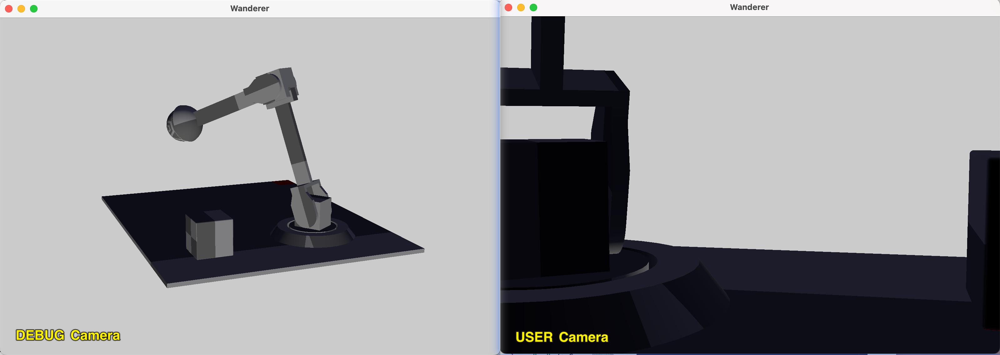

For this A1 assignment, I structured the project around a Scene Manager and a Load Manager. The Scene Manager acts as a set of maps holding information about all the scene objects, while the Load Manager is responsible for handling all the loading tasks, such as parsing and initializing resources.
Most of the runtime logic, such as initialization and setup, takes place in the Application class, specifically in the "Wanderer" application (a renamed and modified version of the previous "Tutorial" application). I divided the keyboard input handling between two methods: some inputs are processed within Wanderer::on_input(), while others are actually handled during the application’s update() function.
I also restructured the project files for better organization. All source code is stored within the Source folder, divided into several key components:
Application (containing "Wanderer")
Configuration (RTG-related files)
DataTypes (which holds custom data structures and methods)
Tools (where I defined multiple managers, the timer, and a type conversion helper)
This reorganization improves the separation of concerns and simplifies code maintenance for the project.
[Brief]
A bird flying above the rotating globe.
[Credit]
Model Globe: Isometric
World by Raphael Frei
Model Bird: Low
poly bird by chantal246
Platform: Blender 4.2.1
s72 Exporter: s72 by Jim
McCann
Animation: Created using keyframing (0-240 frames) in Blender by Livia
Lai
--scene <scene-path>--scene sg-Articulation.s72--scene bird/bird.s72--camera <camera-name>--camera Fixed-Camera--camera Moving-Camera--culling <culling-mode>--culling none--culling frustum1: Switch to SCENE camera mode;2: Switch to USER camera mode;3: Switch to DEBUG camera mode;V: Switching among scene cameras;Z: Copy current camera setting to DEBUG camera in SCENE / USER camera mode;W: Move forward;S: Move backward;A: Move left;D: Move right;Q: Move up;E: Move down;↑: Pitch upward;↓: Pitch downward;←: Yaw to the left;→: Yaw to the right;P: Pause/resume the animation;R: Reset and pause animation;Parse .s72 by sejp and store scene graph info in SceneMgr maps.
I designed a SceneMgr struct to organize the scene graph information. The scene graph data is stored in several unordered_maps, each corresponding to a specific type of object (e.g., nodes, meshes, cameras). The information is parsed from the .s72 file and stored in the appropriate map using the object’s name as the key.
/* Source/Tools/SceneMgr.hpp */
// object maps
SceneObject* sceneObject;
std::unordered_map<std::string, NodeObject*> nodeObjectMap;
std::unordered_map<std::string, MeshObject*> meshObjectMap;
std::unordered_map<std::string, CameraObject*> cameraObjectMap;
std::unordered_map<std::string, DriverObject*> driverObjectMap;
std::unordered_map<std::string, MaterialObject*> materialObjectMap;
std::unordered_map<std::string, EnvironmentObject*> environmentObjectMap;
std::unordered_map<std::string, LightObject*> lightObjectMap;For detailed object structures, refer to SceneMgr.hpp. The data in SceneMgr is essentially a local copy of the data stored in the .s72 file, with only a few additional variables added when necessary.
I used the unordered_map because we need to frequently look up the information during runtime. It improves efficiency.
The load_scene_graph_info_from_s72()
function is implemented in LoadMgr and handles the parsing of the .s72
file. The process is broken down into the following steps:
a) Verify the scene graph file.
b) Clean the SceneMgr object.
c) Parse the scene graph info using sejp).
/* Source/Tools/LoadMgr.hpp */
// load scene graph info
static void load_scene_graph_info_from_s72(const std::string& path, SceneMgr &targetSceneMgr);
static void parse_scene_graph_info(const sejp::value &sceneGraphInfo, SceneMgr &targetSceneMgr);The scene graph parsing is further divided based on the type of scene object:
/* Source/Tools/LoadMgr.hpp */
// loading breakdowns
static void parse_scene_object_info(OptionalPropertyMap &sceneObjectInfo, SceneMgr &targetSceneMgr);
static void parse_node_object_info(OptionalPropertyMap &nodeObjectInfo, SceneMgr &targetSceneMgr);
static void parse_mesh_object_info(OptionalPropertyMap &meshObjectInfo, SceneMgr &targetSceneMgr);
static void parse_camera_object_info(OptionalPropertyMap &cameraObjectInfo, SceneMgr &targetSceneMgr);
static void parse_driver_object_info(OptionalPropertyMap &driverObjectInfo, SceneMgr &targetSceneMgr);
static void parse_material_object_info(OptionalPropertyMap &materialObjectInfo, SceneMgr &targetSceneMgr);
static void parse_environment_object_info(OptionalPropertyMap &environmentObjectInfo, SceneMgr &targetSceneMgr);
static void parse_light_object_info(OptionalPropertyMap &lightObjectInfo, SceneMgr &targetSceneMgr);The loading function is invoked during the application initialization (Wanderer::Wanderer() in Source/Application/Wanderer/Wanderer.cpp) before the object vertices data needs to be loaded.
Mesh vertices are stored in the vertex buffer, with a map used to track their indices. Node matrices are precomputed, and another map is used to record them.
To prepare for object rendering, we need to load the vertex data of the objects and apply the necessary transformations (from model local coordinate to world coordinate). This involves two steps:
a) Loading Mesh Vertices into the Vertex Buffer and Record the Indices
Each mesh in the scene is referenced by different nodes, but their vertex information (positions, normals, tangents, and texture coordinates) only needs to be stored once.
To start with, I defined a MeshAttribute struct to hold this information:
/* Source/DataType/MeshAttribute.hpp */
struct MeshAttribute
{
struct { float x, y, z; } Position;
struct { float x, y, z; } Normal;
struct { float x, y, z, w; } Tangent;
struct { float s, t; } TexCoord;
static const VkPipelineVertexInputStateCreateInfo array_input_state;
};Then, in the load_scene_objects_vertices()
function, I use a breadth-first search (BFS) traversal of the scene
graph to load all the referenced mesh vertices. The vertices are stored
in a temporary buffer, and their start and size are tracked using the
meshVerticesIndexMap.
Additionally, the ObjectVertices struct keeps track of the first index and the number of vertices for each mesh object in the vertex buffer:
/* Source/Application/Wanderer/Wanderer.hpp */
Helpers::AllocatedBuffer object_vertices;
struct ObjectVertices
{
uint32_t first = 0; // index of first vertex in object_vertices
uint32_t count = 0; // number of vertices in object_vertices
};
std::vector<ObjectVertices> scene_nodes_vertices;The indices of the start and size of the mesh vertices is then stored
in meshVerticesIndexMap indexed by
the mesh object name:
/* Source/Application/Wanderer/Wanderer.cpp */
void Wanderer::load_scene_objects_vertices()
{
// ...
for each referenced mesh:
{
ObjectVertices mesh_vertices;
mesh_vertices.first = uint32_t(tmp_object_vertices.size());
uint32_t vertexCount = refMesh->positionList.size();
// assembly attributes into scene object vertex
for (uint32_t i = 0; i < vertexCount; ++i)
{
ObjectsPipeline::Vertex node_vertex;
node_vertex.Position = //...
node_vertex.Normal = //...
node_vertex.Tangent = //...
node_vertex.TexCoord = //...
tmp_object_vertices.push_back(node_vertex);
}
mesh_vertices.count = uint32_t(tmp_object_vertices.size()) - mesh_vertices.first;
sceneMgr.meshVerticesIndexMap[meshObject->name] = scene_nodes_vertices.size();
scene_nodes_vertices.push_back(mesh_vertices);
}
// ...
// when all mesh vertices are handled, copy the vertices to vertex buffer \
// and allocate space for it in GPU
}
// For more details, refer to Wanderer::load_scene_objects_vertices() \
// in Source/Application/Wanderer/Wanderer.cppAgain, I used unordered_map because it allows efficient lookups of vertex data, which is essential since these indices are needed every frame when updating object instances during rendering.
2. Pre-calculate the Node Matrices (LOCAL_TO_WORLD)
For each node, we also need to calculate the local-to-world transformation matrix. These matrices are used per frame to update the objects’ world positions. Instead of recalculating the matrix repeatedly, I store them in a nodeMatrixMap, which is updated using BFS traversal if any transformation of any node is updated.
Note that I’m updating the matrices of all nodes in a BFS loop, from root to leaves, which reduce the repeated work compared to updating from each child to its root parents. What’s more, remember to do some coordinates conversion, considering that s72 is in Z up coords but Vulkan is using a -Y up coords.
/* Source/Tools/LoadMgr.cpp */
void LoadMgr::load_s72_node_matrices(SceneMgr &targetSceneMgr)
{
targetSceneMgr.nodeMatrixMap.clear();
targetSceneMgr.nodeMatrixMap.reserve(targetSceneMgr.nodeObjectMap.size());
struct NodeMatrix {
NodeObject *nodeObject;
glm::mat4 modelMatrix;
};
// put all root nodes in the BFS queue
std::queue<NodeMatrix> nodeMatrixQueue;
for (std::string &nodeName : targetSceneMgr.sceneObject->rootName)
{
NodeMatrix nodeMatrix;
nodeMatrix.nodeObject = targetSceneMgr.nodeObjectMap[nodeName];
glm::mat4 zUpToYDownMatrix = // ... // [IMPORTANT] s72 is Z up,
// Vulkan is -Y up
// (both are right-hand coords)
nodeMatrix.modelMatrix = zUpToYDownMatrix *
SceneMgr::calculate_model_matrix(
nodeMatrix.nodeObject->translation,
nodeMatrix.nodeObject->rotation,
nodeMatrix.nodeObject->scale);
nodeMatrixQueue.push(nodeMatrix);
}
// BFS traversal
while (!nodeMatrixQueue.empty())
{
NodeMatrix current_nodeMatrix = nodeMatrixQueue.front();
nodeMatrixQueue.pop();
// update matrices
targetSceneMgr.nodeMatrixMap[current_nodeMatrix.nodeObject->name] = current_nodeMatrix.modelMatrix;
for (std::string &childName : current_nodeMatrix.nodeObject->childName)
{
// calculate new matrix for each child
NodeMatrix childNodeMatrix;
childNodeMatrix.nodeObject = targetSceneMgr.nodeObjectMap[childName];
childNodeMatrix.modelMatrix = current_nodeMatrix.modelMatrix * // parent
SceneMgr::calculate_model_matrix(childNodeMatrix.nodeObject->translation,
childNodeMatrix.nodeObject->rotation,
childNodeMatrix.nodeObject->scale);
// child matrix
nodeMatrixQueue.push(childNodeMatrix);
}
}
}Wanderer::load_scene_objects_vertices()
is called once during application initialization, following the loading
of scene graph information.
LoadMgr::load_s72_node_matrices()
should be called not only during application initialization (after the
scene graph is loaded), but also whenerver any node’s transformation is
modified, such as after applying an animation driver).
Finally, we retrieve the WORLD_FROM_LOCAL matrix from the nodeMatrixMap, the CLIP_FROM_WORLD from the camera (which
will be discussed in the next section) and the refMeshVerticesIdx from the meshVerticesIndexMap. With these
information, we can update the object_instances during the application’s
update() function.
/* Source/Application/Wanderer/Wanderer.cpp */
/* Wanderer::update() */
/* Wanderer::construct_scene_graph_vertices_with_culling() */
object_instances.clear();
for each node object:
{
object_instances.emplace_back(ObjectInstance{
.vertices = scene_nodes_vertices[refMeshVerticesIdx],
.transform{
.CLIP_FROM_LOCAL = CLIP_FROM_WORLD * WORLD_FROM_LOCAL,
.WORLD_FROM_LOCAL = WORLD_FROM_LOCAL,
.WORLD_FROM_LOCAL_NORMAL = WORLD_FROM_LOCAL_NORMAL
},
.texture = 0,
});
}After updating the object_instances, the node objects will be sent to
drawn in the Wanderer::render().
I created a Camera struct to encapsulate all camera-related functions and variables. This struct contains the basic camera attributes (aspect, vfov, near, far), along with the position, directions, and orientations (front, right, up, yaw, pitch, roll), and control status that help control the camera movement and posture.
/* Source/Camera/Camera.hpp */
struct Camera
{
enum Camera_Mode : uint8_t {
USER, SCENE, DEBUG
};
struct Camera_Attributes {
float aspect, vfov, near, far;
} camera_attributes;
uint8_t camera_mode_cnt;
Camera_Mode current_camera_mode;
// =============================================
// USER mode related variables
/* cr. movement related handle learned from CMU 15666 Computer Game Programming code base
https://github.com/15-466/15-466-f24-base2/blob/b7584e87b2498e4491e6438770f4b4a8d593bbde/PlayMode.cpp#L70 */
struct Camera_Movement {
bool left, right, up, down, forward, backward;
} movements;
struct Camera_Posture {
bool yaw_left, yaw_right, pitch_up, pitch_down;
} postures;
struct Camera_Sensitivity {
float kb_forward, kb_upward, kb_rightward, kb_yaw, kb_pitch;
float mouse_yaw, mouse_pitch; // not used yet
} sensitivity;
/* cr. camera parameters learned from Learn OpenGL
https://learnopengl.com/Getting-started/Camera# */
glm::vec3 position, target_position;
glm::vec3 front, right, up;
float yaw, pitch, roll;
float unit_angle;
};In the RTG::Configuration, I initialized three cameras, but only two are active at a time: camera (for USER/SCENE mode) and debug_camera. The user_camera is a backup, used when switching between SCENE and USER modes. Additionally, a specified_default_camera stores the name of a camera specified via the command line, which will be used to initialize the main camera (if provided).
/* Wanderer::RTG::Configuration */
// if set, use a specific camera:
std::string specified_default_camera = "";
// a scene have two active camera,
// the main is for USER / SCENE mode, another is for DEBUG mode
Camera camera; // an active camera used for USER / SCENE mode;
Camera debug_camera; // an active camera used for DEBUG mode;
Camera user_camera; // a backup camera for user camera settings.Beyond the initial camera setup in the Camera struct, I perform a second "initialization" after loading the scene graph and reading camera parameters. The logic follows these rules:
If there are scene graph cameras, if a camera is specified by the command line, the viewer will search for it in the scene camera map. If found, it initialize the main camera with its parameters. if not found, throw error and exit the application. if no camera is specified, the program will select the first scene camera from the map and use its settings as the default. If there are none scene cameras, the program will look for the first root node of the scene, and let the camera looking at it from a small distance.
This logic is implemented in Wanderer::Wanderer()
function, while command-line camera handling is done in RTG::Configuration::parse().
Mode Switching
Camera mode control is handled in the Wanderer::on_input()
function of the application. Pressing keys 1, 2, or 3 switches between
SCENE, USER, and DEBUG modes, respectively. Pressing ’v’ in SCENE mode
cycles through available scene cameras (if any).
Importantly, when switching between SCENE and USER modes, the camera settings update the main camera’s parameters and backup the user camera settings in user_camera. However, in DEBUG mode, only the debug_camera settings are updated, isolating it from the main camera’s settings to allow auxiliary viewing without affecting the clipping matrix.
Movement and Postures
Camera movement and posture are controlled through keypress events in
Wanderer::on_input().
The logic is based on the 15666 Computer Game Programming course code:
pressing a key sets the relevant camera state to true, and releasing it
sets the state to false. The actual camera movement happens in the Wanderer::update()
function, where it responds based on the current camera state.
Whenever the main camera settings are modified, the CLIP_FROM_WORLD matrix is updated. This occurs during camera mode switches and when applying animation drivers.

To handle frustum culling, I defined Plane, Frustum, and BBox structures. These were inspired by Learn OpenGL’s Frustum Culling and the BBox class was adapted from BBox.h of Scotty3D from CMU 15662 Computer Graphics.
/* Source/DataType/Plane.hpp */
struct Plane {
glm::vec3 position;
glm::vec3 normal;
};
/* Source/DataType/Frustum.hpp */
struct Frustum {
Plane topFace, bottomFace, leftFace, rightFace, nearFace, farFace;
};
/* Source/DataType/BBox.hpp */
struct BBox {
glm::vec3 min, max;
};The methods are implemented in their respective files, refer to see the details.
I add the BBox property for each MeshObject and NodeObject in SceneMgr. The MeshObject’s bounding box helps simplify the calculation of the NodeObject’s bounding box, though it introduces some small inaccuracies.
The MeshObject’s BBox is calculated when parsing mesh object attributes from the scene graph. And the NodeObject’s bounding box is updated every frame after its transformation is applied (for example, after animations or movements driven by the system’s drivers). This update occurs right before frustum culling takes place.
Frustum culling follows an algorithm similar to Flipcode’s article on frustum culling. The process works as follows:
For a given camera, we have six frustum planes (top, bottom, left, right, near, and far).
For each BBox, we check the 8 corner points of the bounding box.
If any of these points are in front of all six planes (determined using a dot product with the plane’s normal), the point is inside the frustum.
If a certain number of points (greater equal than n, which is 4 in my project) are inside the frustum, the entire BBox is considered to be inside the frustum.
Refers to Source/DataType/Frustum.cpp for details.
I created an abstract Timer class to handle animations. The timer tracks parameters like maximum time, current time, and its state (paused or running).
/* Source/Tools/Timer.hpp */
struct Timer
{
bool paused;
float t, tmax;
void reset();
void pause_or_resume();
void update(float dt);
};The maximum time is intended to hold the length of the scene’s
longest animation. Every frame, the application’s update() function
calls the Timer::update()
method to adjust the time. If the current time exceeds the maximum, the
timer resets to zero, which helps avoid precision issues as the time
becomes larger and larger.
The animation timer is stored globally within the application.
/* Source/Application/Wanderer/Wanderer.hpp */
//--------------------------------------------------------------------
// Resources that change when time passes or the user interacts:
// ...
Timer animation_timer;
// ...Animation data is stored in DriverObject instances within SceneMgr, acting as a buffer to hold keyframe information from the s72 scene graph file.
/* Source/Tools/SceneMgr.hpp */
struct DriverObject
{
std::string name;
std::string refObjectName; // target object
DriverChannleType channel;
uint32_t channelDim;
std::vector<float> times;
std::vector<float> values;
DriverInterpolation interpolation = DriverInterpolation::LINEAR;
};During each frame, in the Wanderer::update()
function, the interpolated (or unmodified, depending on the driving
mode) transformation data stored in the drivers (such as translation or
rotation) replaces the original values in the corresponding NodeObject.
Afterward, the model matrices for these nodes are recalculated. This
process occurs before frustum culling and the construction of
object_instances.
/* Source/Application/Wanderer/Wanderer.cpp */
/* Wanderer::update() */
// ===============================================
// apply drivers to nodes to animate the scene
if (!animation_timer.paused)
{
rtg.configuration.sceneMgr.update_nodes_from_animation_drivers(animation_timer.t);
LoadMgr::load_s72_node_matrices(rtg.configuration.sceneMgr);
// ...
};Once the viewer is running, the scene’s animation will loop
continuously. Users are provided with two keys to control the animation:
P for pause/resume, and R for resetting the animation (with the
animation being paused). These controls are defined in Wanderer::on_input()
and handled in the Wanderer::update()
function.
Not implemented yet. Need more time to get clear about the pipeline structure.
I did not implement any major performance improvements in this project. However, I did conduct some tests and made minor optimizations to the CPU-side code. They are shared in the following section.
Frustum culling doesn’t improve performance when the camera view contains all scene objects, as no objects are excluded from rendering. Instead, frustum culling adds extra work to the CPU without providing any benefit in these cases. For example, I tested with a scene I found online—cartoon forest.
As shown in the figure, the red line (representing frustum culling being applied) demonstrates higher rendering times compared to the blue line (where no culling is performed).
To further explore the benefits of culling, I downloaded several large scenes (with more than 100k vertices). Surprisingly, all frames rendered in approximately 19ms—except for sphereflake.s72. I suspected the scenes I downloaded might have been too simple, allowing the work to be parallelized quickly, though I can’t be sure.
Ultimately, I returned to the sphereflake.s72 scene, which was the only one to significantly slow down my viewer. Without frustum culling, the rendering time per frame was around 250ms. However, when the camera was positioned to face only 1 or 2 spheres (and culling the rest), the rendering time dropped to 40ms per frame. This demonstrates the performance boost provided by culling when there are many objects outside the camera’s view.
In principle, a node’s ground-truth bounding box (BBox) should enclose all of its vertex data in world coordinates. However, recalculating the BBox by iterating over all the vertices every frame can be time-consuming. To optimize this, I implemented an approximation method.
I precomputed the BBox for each mesh during the mesh loading stage. Then, for each frame, instead of recalculating the BBox from the vertices, I apply the node’s local-to-world transformation matrix to the precomputed mesh BBox. The node’s BBox is updated by enclosing the transformed corners of the mesh BBox.
Using the sphereflake.s72 test case, I found that this approximation method is 3x faster than the exact calculation, with acceptable accuracy loss. Although I can’t say whether the accuracy loss is significant, the frustum culling results closely match my expectations. Therefore, I consider the method effective.
I observed that node matrices are frequently accessed and updated every frame. Traditionally, to calculate a node’s model matrix, the process traverses from the child up to its root each time. But I think it will lead to redundant calculations. For example, if you have a grandparent, parent, child1, and child2, the parent’s matrix will be computed twice when processing both child1 and child2. As the number of nodes increases, this overhead becomes more significant. To optimize this, I implemented a node matrix lookup table that is updated in a single pass, from root to leaves. This avoids repeated calculations for shared parent nodes. While I don’t have comparison data with the less efficient method (since this approach was implemented from the start), I believe it’s worth mentioning as an optimization, even if it’s a minor one.
This has been a great project that required a significant amount of my time, but I still haven’t fully completed it. I hope to catch up on the things I missed in the coming days. I’m grateful for all the teaching resources provided. nakluV is a comprehensive tutorial that covers many of the topics I care about, but it will take more time to fully digest everything.